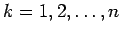

Inhalt Index DeskTop Bronstein

 Integraltransformationen Fourier-Transformation Eigenschaften der Fourier-Transformation Rechenregeln zur Fourier-Transformation
Integraltransformationen Fourier-Transformation Eigenschaften der Fourier-Transformation Rechenregeln zur Fourier-Transformation


Wenn die Funktion tnf(t) in  absolut integrierbar ist, dann besitzt die FOURIER-Transformierte der Funktion stetige Ableitungen, die mit Hilfe von
absolut integrierbar ist, dann besitzt die FOURIER-Transformierte der Funktion stetige Ableitungen, die mit Hilfe von
| (15.90a) |
bestimmt werden. Dabei ist , und es gilt:
| (15.90b) |
Unter den gemachten Voraussetzungen folgt aus diesen Beziehungen
| (15.90c) |